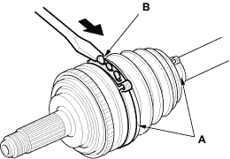
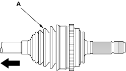
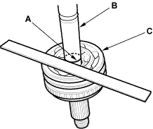
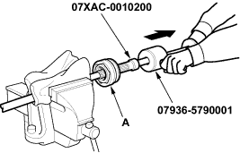

Outboard Joint Side:
- Remove the boot bands. Take care not to damage the boot and dynamic damper.
- If the boot band is an ear clamp type (A), lift up the three tabs (B) with a screwdriver.
Ear Clamp Type

- Slide the outboard boot (A) to the inboard joint side. Take care not to damage the boot.


- Wipe off the grease to expose the driveshaft and the outboard joint inner race.
- Make a mark (A) on the driveshaft (B) at the same position of the outboard joint end (C).

- Carefully clamp the driveshaft in a vice.

- Remove the outboard joint (A) using the special tool.
- Remove the driveshaft from the vice.